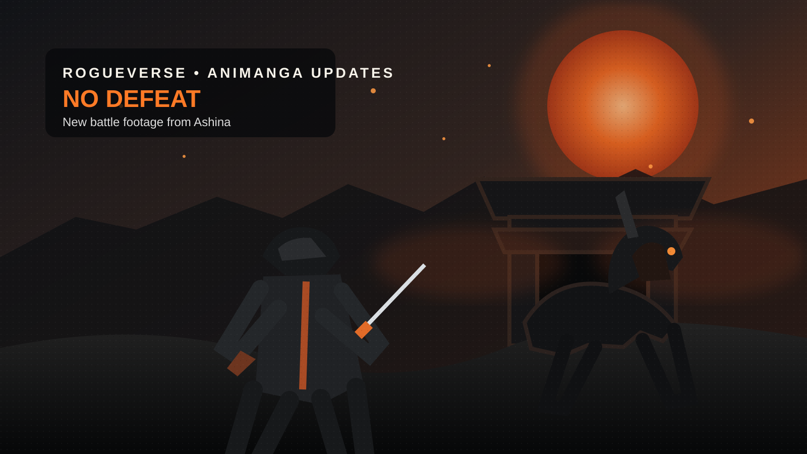

OLD MAN OTAKU / ANIME FILM • AUGUST 22, 2026
Sekiro: No Defeat Unleashes Wolf vs. Gyoubu in New Battle Footage
The road back to Ashina just got louder. A new teaser puts Wolf against Gyoubu Masataka Oniwa and gives us another substantial look at Qzil.la's hand-drawn adaptation before its September 4 Japanese theatrical debut.

Sekiro: No Defeat has released new footage from its upcoming theatrical anime, and this time the spotlight falls on one of the game's most memorable early confrontations: Wolf versus Gyoubu Masataka Oniwa.
The new teaser arrives ahead of the film's September 4, 2026 Japanese theatrical debut. The release is planned as a limited three-week run, turning the adaptation into a compact theatrical event before its eventual international streaming rollout.
Watch the new Wolf vs. Gyoubu teaser ↗
Why this battle is a useful test for the anime
Gyoubu is not simply a recognizable boss. His encounter helps establish the original game's combat identity. His size, speed and mounted mobility contrast with Wolf's smaller silhouette and precision-focused swordplay, forcing the player to read distance, timing and pressure instead of trading attacks blindly.
That is exactly why the scene matters for the adaptation. Sekiro's fighting system is built around participation: attack, deflect, reposition, pressure and counter. Anime cannot reproduce the sensation of holding the controller, so No Defeat has to translate that rhythm into choreography.
The new footage suggests the production is leaning into scale and momentum rather than trying to mimic recorded gameplay. Wolf stays grounded while Gyoubu's horse turns the battlefield into a moving target. If the finished film can make those exchanges feel deliberate rather than simply fast, it will have solved one of the adaptation's hardest problems.
A limited theatrical run begins September 4
Sekiro: No Defeat opens in Japan on September 4 and is scheduled for a three-week theatrical run. KADOKAWA's listing also gives the film a PG12 Japanese rating.
Crunchyroll has announced plans to stream the film internationally outside several excluded territories, although a specific streaming premiere date has not yet been announced. September 4 is therefore the Japanese theatrical launch, not necessarily the day every overseas viewer will be able to watch it.
Qzil.la is handling the production
Animation production is being handled by Qzil.la, with Kenichi Kutsuna directing and Takuya Satou writing the screenplay. The announced staff also includes Takahiro Kishida on character design, Shunsuke Fukui as deputy director, Kaito Moki as chief animation director, Takashi Mukoda as action animation director, Yuji Kaneko as art director and Shuta Hasunuma on music.
Those action-animation credits matter for a property where every clash of steel is part of the language. The film can change pacing and presentation, but it cannot afford to make Wolf's swordplay feel weightless.
The production committee addressed generative-AI speculation
One production detail is now firmly on record. After online speculation connected to Qzil.la's broader technology work, the Sekiro: No Defeat production committee explicitly stated that the film is being produced as fully hand-drawn 2D animation and that generative AI is not being used to create or produce the anime.
That distinction matters. A studio's involvement with technology research is not proof that generative AI was used on a particular project, and in this case the production committee has directly stated its position.
More than a collection of boss fights
The adaptation still has a larger challenge ahead. Sekiro cannot become a greatest-hits reel of famous battles. The story ultimately turns on Wolf's relationship with Kuro, the Divine Heir, against the political and supernatural collapse of Ashina.
Animation may even have an advantage here. Games let the player inhabit Wolf. Film can spend more time observing him. His loyalty, silence and willingness to endure extraordinary violence in service of Kuro can be framed more directly when the story no longer has to wait for the player to cross the next battlefield.
The Old Man Otaku take
The new Gyoubu footage attacks the adaptation's hardest question directly: can Sekiro still feel like Sekiro when nobody is holding the controller?
So far, No Defeat appears less interested in copying gameplay literally and more interested in translating its rhythm, scale and atmosphere into traditional animation. That is the right battlefield to choose.
Wolf is back at the Ashina Castle Gate. And Gyoubu brought the horse.